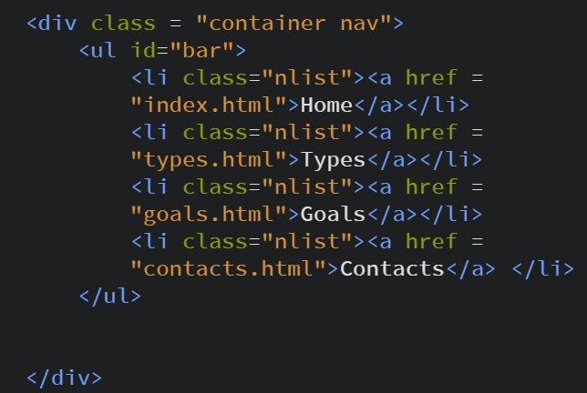
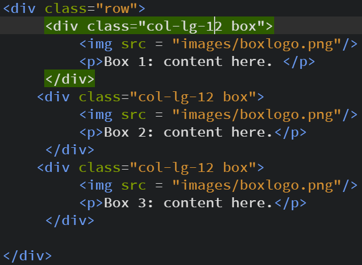
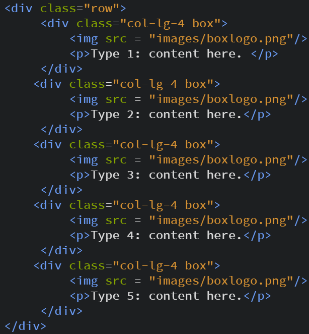
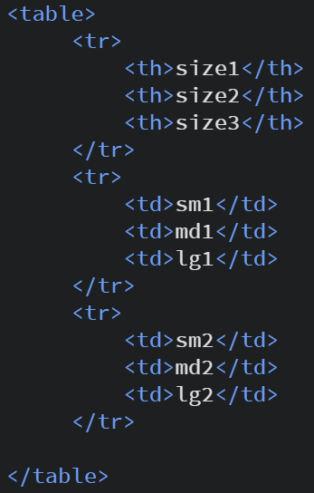
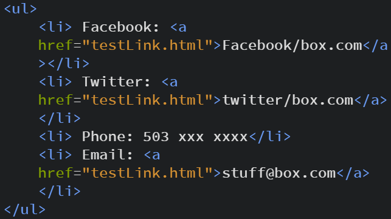

Homework 1
Assignment Summary
The first main goal is to use git by understanding some basic commands, how repositories work, as well as know how to control a remote repository on a github or bitbucket. We will also need to create a basic website using html, css, and bootstrap. We will finally need to create a portfolio page using github pages to display all of our work. A link to the the full assignment and requirements are here.
Step 1(using git and github):
The first thing to consider is any downloads I need to take care of. The good thing is that I already had git downloaded so that saved me a bit of time. To use github I need to make an account on https://github.com/.This was a was a pretty straightforward process. I already had some prior knowledge about git which helped complete this. I then made sure to use git bash since the instructor wanted us to use a command line when using git. The next thing i did is set up the user name and email that will show on each commit with the commands:
git config --global user.name “Hector Acosta-Cervantes”
git config --global user.email hacostacervantes17@mail.wou.edu
I then created the local repository, linked to a remote server and pushed the local repository to the server(note: I went to github and made a repository already to store the repository):
cd documents
mkdir cs460
cd cs460
git init
git remote add origin https://github.com/1HectorAC/cs460.git
git push origin master
Step2(making a website with html, css, bootstrap):
I took a web applications class a few years back so I already has some experience using html and css. The first think I did was try to get a better understanding on how to use bootstrap. I looked up an introduction on it at http://getbootstrap.com/docs/4.1/getting-started/introduction/ and learned that you could download a file or reference the URL in head of the html to use it. I decided to reference the URL like this:
link rel="stylesheet" href="https://stackpath.bootstrapcdn.com/bootstrap/4.1.3/css/bootstrap.min.css" integrity="sha384-MCw98/SFnGE8fJT3GXwEOngsV7Zt27NXFoaoApmYm81iuXoPkFOJwJ8ERdknLPMO" crossorigin="anonymous" >
I then looked up how to use it and found this link useful on understanding the grid format: https://getbootstrap.com/docs/3.3/css/ . Now for the website itself I didn't think much about the subject or content so I just made it about boxes. I also just copied filler content from a search of “box” in wikipedia and added some nonsense since the point wasn't about content.
Navigation var code:
Bootstrap columns code:
 Html Table:
Html ol list:

Html ul list:
One thing I might want to consider is to lower the number of classes I use in the future.
Step 3 (setting up a portfolio):
The first think I need to know is how to setup a github page to use as a portfolio. The link https://pages.github.com/ provided a good amount of information on how to setup a github pages. So then I created a new repository called 1hectorac.github.io, which must be named based on your username in github. I made a local directory and linked them. I originally thought about using jekyll to create the blog pages but I felt that it would be faster to just use what I know and stick with html pages for now. I might consider looking up jekyll later if I have the time. I also had to make sure to make an “index.html” since that is what will originally loads when I go to my github page.